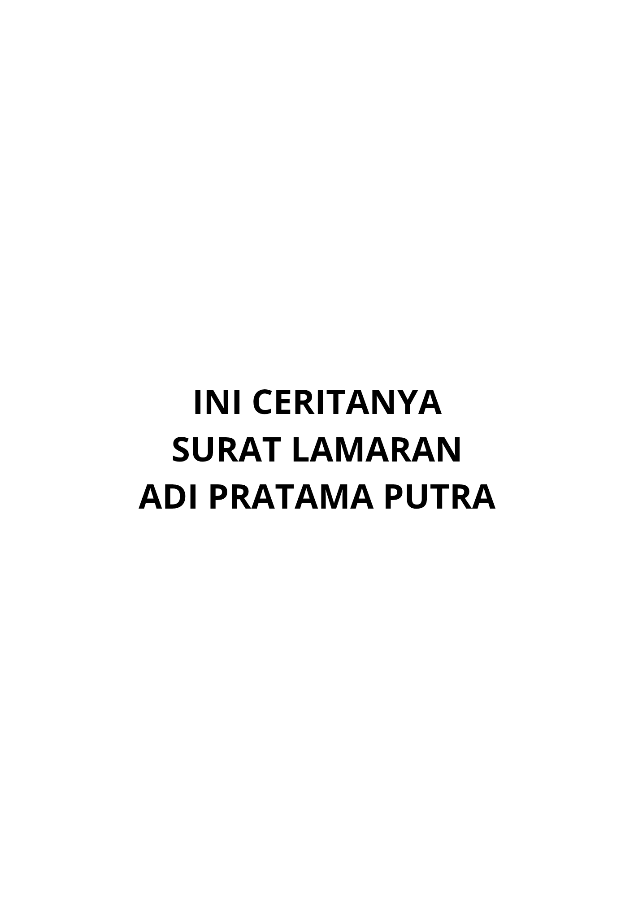

WEBSITE STATIS LAMARAN PEKERJAAN
Beranda
Portofolio
Prestasi
Sosial Media
Surat Lamaran Pekerjaan

Biodata Pribadi
Nama :
Adi Pratama Putra
Umur :
19 Tahun
Alamat :
Kotabaru, Karawang
No Telepon :
+62 812-3456-7890
Email :
2310631170062@student.unsika.ac.id
Skill :
Design Graphic